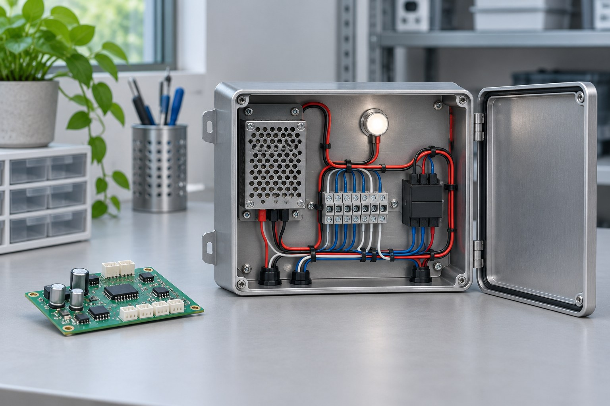

Curso · 8 aulas · uma peça por aula
Monte o seu agente peça por peça: ele atende no Telegram e só diz pronto depois de conferir
Você usa IA no chat, mas ela não recebe pedido sozinha, não faz a tarefa e não confere o que fez. Aqui você monta um agente de verdade, peça por peça: o canal por onde o pedido chega, a caixa que decide, o cérebro (o Codex da sua assinatura), as receitas e ferramentas que fazem, e o verificador que confere antes de dizer pronto.
- 9peças, uma por arquivo
- 4canais: terminal, chat, Telegram e pasta
- 0chave de API: o cérebro é a sua assinatura
- 3tentativas antes de cancelar
O mapa das peças
Este é o agente inteiro. Clique numa peça para ver o que ela faz e em que aula ela entra.
Clique em cada bloco do diagrama para ver o que ele faz.
As aulas
Cada aula acende uma parte do mapa. No kit, cada aula é uma tag: git checkout aula2, aula3…
 Aula 1 · 12 minO mapa do agente, e o objetivo do seuNo chat, você pede e a IA devolve texto; quem faz é você. Um agente recebe o pedido sozinho, faz a tarefa e confere antes de dizer pronto. Nesta aula você vê as peças de um agente num mapa só, baixa o kit e escreve o objetivo do seu.
Aula 1 · 12 minO mapa do agente, e o objetivo do seuNo chat, você pede e a IA devolve texto; quem faz é você. Um agente recebe o pedido sozinho, faz a tarefa e confere antes de dizer pronto. Nesta aula você vê as peças de um agente num mapa só, baixa o kit e escreve o objetivo do seu.
Aula 2 · 15 minA caixa e o cérebro: o primeiro pedidoA caixa é a rotina que recebe o pedido; o cérebro é o modelo que pensa. Aqui eles se encontram pela primeira vez: o terminal entrega o pedido, a caixa chama o Codex da sua assinatura e devolve a resposta. São três arquivos curtos.- Aula 3 · 15 minCanal chat: o seu agente numa página webO terminal é um canal; uma página de chat é outro. A caixa é a mesma: só muda a porta por onde o pedido entra. Nesta aula o agente ganha uma página no seu navegador, com a trilha das peças embaixo de cada resposta.
- Aula 4 · 20 minCanal Telegram: o agente no seu celularO chat da aula 3 só abre no seu computador. No Telegram, você manda o pedido de qualquer lugar e o agente responde ali mesmo. Você cria o bot em dois minutos, cola o token num arquivo e liga o canal. A caixa continua a mesma.
- Aula 5 · 15 minCanal pasta: o robô que trabalha sem conversaNem todo pedido vem de uma pessoa conversando. Um sistema, uma planilha ou outro agente pode só deixar um arquivo numa pasta. O robô vigia a pasta, atende cada arquivo e grava o resultado. Ninguém espera resposta na tela.
- Aula 6 · 15 minReceita ou cérebro: o pedido exato não precisa de IANem todo pedido precisa do cérebro. "Adicione pão na lista" é sempre igual: uma receita faz, na hora, de graça e sem errar. O cérebro fica para o pedido aberto, e aí ele pede ferramentas para agir. Nesta aula a caixa aprende a escolher.
- Aula 7 · 18 minMemória e regras: o que ele lembra e o que ele não podeNa aula 6, o Codex respondeu "não posso divulgar uma senha", mas a ferramenta já tinha lido o segredo. Pedir educadamente ao modelo não é regra. Nesta aula as regras vão para o código das ferramentas, e o agente ganha memória: o que você conta fica guardado para a próxima conversa.
- Aula 8 · 20 minVerificador e loop: só diz pronto depois de conferirAté aqui o agente dizia pronto porque respondeu. Agora um verificador confere o resultado contra o pedido. Reprovou, ele tenta de novo; reprovou três vezes, cancela e avisa. E você vai ver por que um exemplo concreto vale mais que um juiz.
Para quem é
- 1Quem já usa o ChatGPT ou o Claude e quer saber o que tem dentro de um agente.
- 2Quem sabe abrir o terminal e colar um comando (não precisa saber programar).
- 3Quem tem a assinatura do ChatGPT (o Codex usa ela, sem chave de API).
O que você sai fazendo
- 1Um agente que atende pelo chat, pelo Telegram e por uma pasta, sem ninguém conversando.
- 2Receitas que fazem o pedido exato sem gastar o cérebro.
- 3Um verificador que confere o resultado e cancela depois de 3 tentativas.